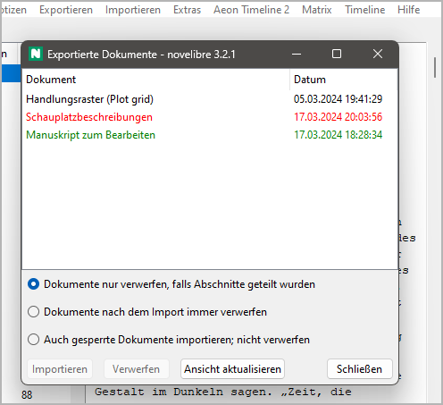

Importieren-Menü
Das Projekt aus einem zuvor exportierten ODF-Dokument aktualisieren
Mit the Importieren-Eintrag im Hauptmenü können Sie eine Liste von zuvor exportierten ODF-Dokumenten aufrufen. Sie können diese Dokumente importieren, um das Projekt zu aktualisieren.
Dokumenttyp und Datum werden angezeigt.
Dokumente, die neuer als die Projektdatei sind, sind in grüner Schrift eingetragen.
Dokumente, die nicht importiert sind, weil sie in Writer offen sind, sind in roter Schrift eingetragen.
Sie können das Projekt aus einem Dokument aktualisieren, indem Sie entweder auf den Listeneintrag doppelklicken, oder indem Sie das Dokument in der Liste auswählen und auf die Importieren-Schaltfläche klicken.
Sie können Dokumente entfernen, indem Sie sie in der Liste auswählen und auf die Verwerfen-Schaltfläche klicken.
Hinweis
Verwerfen heißt umbenennen, indem die Erweiterung .bak an den Dateinamen angehängt wird.
Nachdem Sie in Writer ein Dokument geschlossen haben, während das Fenster Exportierte Dokumente noch offen ist, können Sie auf die Schaltfläche Ansicht aktualisieren klicken.
Dokumente verwerfen, nachdem das Projekt aktualisiert wurde
Dokumente mit aufgeteilten Abschnitten werden nach dem Reimport automatisch verworfen, um Verwirrung durch die geänderte Kapitel- oder Abschnittsstruktur zu vermeiden. Was Dokumente angeht, die keine Änderung der Projektstruktur erfordern, haben Sie drei Möglichkeiten zur Wahl:
- Dokumente nur verwerfen, falls Abschnitte geteilt wurden
Das ist das standardmäßige Verhalten. Die ODF-Dokumente werden zum späteren Gebrauch aufbewahrt.
- Dokumente nach dem Import immer verwerfen
Nachdem das novelibre-Projekt aus einem reimportierten ODF-Dokument aktualisiert worden ist, wird dieses Dokument automatisch verworfen.
- Auch gesperrte Dokumente importieren; nicht verwerfen
Das ermöglicht häufige schnelle Projektaktualisierungen, während die ODF-Dokumente in Writer oder Calc zur Bearbeitung geöffnet bleiben.
Wichtig
Falls Sie in Ihrem ODT-Dokument Abschnitte aufgeteilt haben, können Sie es nicht reimportieren, solange es in Writer offen ist. Das ist so, weil novelibre es nicht verwerfen kann, solange es durch Writer gesperrt ist.